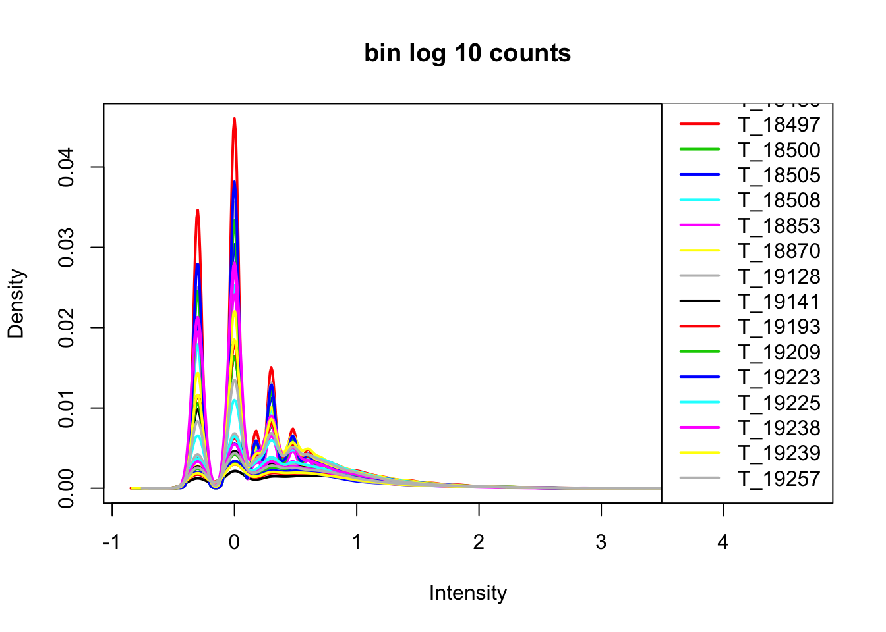
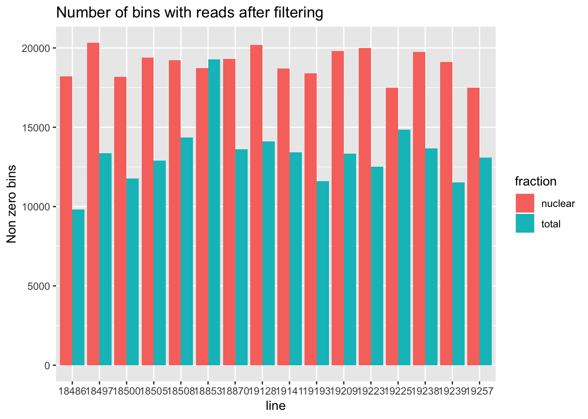

Last updated: 2018-06-05
workflowr checks: (Click a bullet for more information) ✔ R Markdown file: up-to-date
Great! Since the R Markdown file has been committed to the Git repository, you know the exact version of the code that produced these results.
✔ Environment: empty
Great job! The global environment was empty. Objects defined in the global environment can affect the analysis in your R Markdown file in unknown ways. For reproduciblity it’s best to always run the code in an empty environment.
✔ Seed:
set.seed(12345)
The command set.seed(12345) was run prior to running the code in the R Markdown file. Setting a seed ensures that any results that rely on randomness, e.g. subsampling or permutations, are reproducible.
✔ Session information: recorded
Great job! Recording the operating system, R version, and package versions is critical for reproducibility.
✔ Repository version: f3199e2
wflow_publish or wflow_git_commit). workflowr only checks the R Markdown file, but you know if there are other scripts or data files that it depends on. Below is the status of the Git repository when the results were generated:
Ignored files:
Ignored: .Rhistory
Ignored: .Rproj.user/
Untracked files:
Untracked: data/gene_cov/
Untracked: data/leafcutter/
Untracked: data/reads_mapped_three_prime_seq.csv
Untracked: data/ssFC200.cov.bed
Untracked: output/plots/
Unstaged changes:
Modified: code/Snakefile
| File | Version | Author | Date | Message |
|---|---|---|---|---|
| Rmd | f3199e2 | Briana Mittleman | 2018-06-05 | prepare leaf cutter table |
| html | 4a45d81 | Briana Mittleman | 2018-06-04 | Build site. |
| Rmd | 0619d81 | Briana Mittleman | 2018-06-04 | nonzero bins analysis |
| html | 7ea0888 | Briana Mittleman | 2018-06-04 | Build site. |
| Rmd | 1728093 | Briana Mittleman | 2018-06-04 | cov at 200bp windows by sample and frac |
| html | 8a69156 | Briana Mittleman | 2018-05-31 | Build site. |
| Rmd | 827c3d1 | Briana Mittleman | 2018-05-31 | create pos and neg window file and do cov analysis |
| html | 5de4753 | Briana Mittleman | 2018-05-30 | Build site. |
| Rmd | 87e5145 | Briana Mittleman | 2018-05-30 | strand spec |
| html | ecfd1d1 | Briana Mittleman | 2018-05-30 | Build site. |
| Rmd | 3a00526 | Briana Mittleman | 2018-05-30 | fix feature count code for 200 bp analysis |
| html | 710cf6a | Briana Mittleman | 2018-05-29 | Build site. |
| Rmd | d58bc13 | Briana Mittleman | 2018-05-29 | start 200 bp analysis |
I will use this analysis to bin the genome into 200bp windows and look at coverage for the 3’ seq libraries for each of these windows. I will use this data then in the leafcutter pipeline to look at differences between data from the total and nuclear fractions.
I performed a similar analysis for the net-seq data so some of the code will come from that. https://brimittleman.github.io/Net-seq/create_blacklist.html
The binned genome file is called: genome_200_wind_fix2.saf, it is in my genome annotation directory.
#!/bin/bash
#SBATCH --job-name=cov200
#SBATCH --time=8:00:00
#SBATCH --output=cov200.out
#SBATCH --error=cov200.err
#SBATCH --partition=broadwl
#SBATCH --mem=20G
#SBATCH --mail-type=END
module load Anaconda3
source activate three-prime-env
#input is a bam
sample=$1
describer=$(echo ${sample} | sed -e 's/.*\YL-SP-//' | sed -e "s/-sort.bam$//")
featureCounts -T 5 -a /project2/gilad/briana/genome_anotation_data/an.int.genome_200_strandspec.saf -F 'SAF' -o /project2/gilad/briana/threeprimeseq/data/cov_200/${describer}_FC200.cov.bed $1I will need to create a wrapper to run this for all of the files.
#!/bin/bash
#SBATCH --job-name=w_cov200
#SBATCH --time=8:00:00
#SBATCH --output=w_cov200.out
#SBATCH --error=w_cov200.err
#SBATCH --partition=broadwl
#SBATCH --mem=8G
#SBATCH --mail-type=END
for i in $(ls /project2/gilad/briana/threeprimeseq/data/sort/*.bam); do
sbatch cov200.sh $i
doneCurrent analysis is not stand specific. I need to make windows for the negative strand. To do this I need to copy the genome_200_wind_fix2.saf file but with geneIDs starting with the last number of the file and with a - for the strand. The last window number is 15685849. I will have to start from 15685850.
In general I will use awk to create the file. The last number is 31371698 because that is 2 * the number of bins in the genome. I w
#i will delete the top line at the end
seq 15685849 31371698 > neg.bin.num.txt
cut -f1 neg.bin.num.txt | paste - genome_200_wind_fix2.saf | awk '{ if (NR>1) print $1 "\t" $3 "\t" $4 "\t" $5 "\t" "-"}' > genome_200_wind_fix2.negstrand.saf
#cat files together
cat genome_200_wind_fix2.saf genome_200_wind_fix2.negstrand.saf > genome_200_strandsspec_wind.saf
I can use this to get coverage in all of the windows with strand specificity. I will call this script ss_cov200.sh
#!/bin/bash
#SBATCH --job-name=sscov200
#SBATCH --time=8:00:00
#SBATCH --output=sscov200.out
#SBATCH --error=sscov200.err
#SBATCH --partition=broadwl
#SBATCH --mem=20G
#SBATCH --mail-type=END
module load Anaconda3
source activate three-prime-env
#input is a bam
sample=$1
describer=$(echo ${sample} | sed -e 's/.*\YL-SP-//' | sed -e "s/-sort.bam$//")
featureCounts -T 5 -s 1 -O --fraction -a /project2/gilad/briana/genome_anotation_data/genome_200_strandsspec_wind.saf -F 'SAF' -o /project2/gilad/briana/threeprimeseq/data/ss_cov200/${describer}_ssFC200.cov.bed $1Try this with. /project2/gilad/briana/threeprimeseq/data/sort/YL-SP-18486-N_S10_R1_001-sort.bam
I will update my wrapper to use this script.
The current script does not allow reads that map to multiple bins. We expect then so I will update the featureCounts code to account for this.
-O allows multi mapping -fraction will put a fraction of the read in each bin
The next step is to add genes annotations to each bin. I will do this with bedtools closest on my window file.
gene file: /project2/gilad/briana/genome_anotation_data/gencode.v19.annotation.proteincodinggene.sort.bed
I want to keep the windows with gene and add the name of the gene they are in.
a= windows b= genes
force stranded= -s
I need to make the window file a sorted bed file. It should be the chr number without the ‘chr’ tag, start, end, bin number, “.”, strand.
awk '{if (NR>1) print $2 "\t" $3 "\t" $4 "\t" $1 "\t" "." "\t" $5}' genome_200_strandsspec_wind.saf | sed 's/^chr//' | sort -k1,1 -k2,2n > genome_200_strandspec.bed
#!/bin/bash
#SBATCH --job-name=annotate_wind
#SBATCH --time=8:00:00
#SBATCH --output=an_wind.out
#SBATCH --error=an_wind.err
#SBATCH --partition=broadwl
#SBATCH --mem=30G
#SBATCH --mail-type=END
module load Anaconda3
source activate three-prime-env
bedtools closest -s -a genome_200_strandspec.bed -b gencode.v19.annotation.proteincodinggene.sort.bed > annotated.genome_200_strandspec.bedNow i can use intersect to only keep the windows that interdect that protien coding genes.
#!/bin/bash
#SBATCH --job-name=int_wind
#SBATCH --time=8:00:00
#SBATCH --output=int_wind.out
#SBATCH --error=int_wind.err
#SBATCH --partition=broadwl
#SBATCH --mem=30G
#SBATCH --mail-type=END
module load Anaconda3
source activate three-prime-env
bedtools intersect -wa -sorted -s -a annotated.genome_200_strandspec.bed -b gencode.v19.annotation.proteincodinggene.sort.bed > annotated.int.genome_200_strandspec.bedawk '{print $1 "\t" $2 "\t" $3 "\t" $4 "\t" $5 "\t" $6 "\t" $10}' annotated.int.genome_200_strandspec.bed > an.int.genome_200_strandspec.bedI went from 31590487 to 7371747 windows. I need to make this into a saf file and the name of the window will be the number.gene
awk '{print $4"."$7 "\t" $1 "\t" $2 "\t" $3 "\t" $6}' an.int.genome_200_strandspec.bed > an.int.genome_200_strandspec.saf
#go into the file with vi and add headerNow I can change my feature counts script to use this file instead.
I need to get rid of the lines with 2 genes overlapping in the bin. I will do this by removing the lines with a :.
for i in $(ls *.bed); do
cat $i | grep -v -e ";" > ../ss_cov200_no_overlap/$i
done
The next step is to bind all of these files. This file will have all 6323877 windows as the rows and columns for each of the 32 files
less 18486-N_S10_R1_001_ssFC200.cov.bed | cut -f1-6 > tmp
for i in ./*cov.bed; do
echo "$i"
less ${i} | cut -f7 >col
paste tmp col> tmp2; mv tmp2 tmp; rm col; done
mv tmp ssFC200.cov.bedThis in now ready to move to R an work with it here.
library(workflowr)Loading required package: rmarkdownThis is workflowr version 1.0.1
Run ?workflowr for help getting startedlibrary(ggplot2)
library(dplyr)
Attaching package: 'dplyr'The following objects are masked from 'package:stats':
filter, lagThe following objects are masked from 'package:base':
intersect, setdiff, setequal, unionlibrary(tidyr)
library(edgeR)Warning: package 'edgeR' was built under R version 3.4.3Loading required package: limmaWarning: package 'limma' was built under R version 3.4.3library(reshape2)Warning: package 'reshape2' was built under R version 3.4.3
Attaching package: 'reshape2'The following object is masked from 'package:tidyr':
smithsnames=c("N_18486","T_18486","N_18497","T_18497","N_18500","T_18500","N_18505",'T_18505',"N_18508","T_18508","N_18853","T_18853","N_18870","T_18870","N_19128","T_19128","N_19141","T_19141","N_19193","T_19193","N_19209","T_19209","N_19223","N_19225","T_19225","T_19223","N_19238","T_19238","N_19239","T_19239","N_19257","T_19257")cov_all=read.table("../data/ssFC200.cov.bed", header = T, stringsAsFactors = FALSE)
#remember name switch!
names=c("Geneid","Chr", "Start", "End", "Strand", "Length", "N_18486","T_18486","N_18497","T_18497","N_18500","T_18500","N_18505",'T_18505',"N_18508","T_18508","N_18853","T_18853","N_18870","T_18870","N_19128","T_19128","N_19141","T_19141","N_19193","T_19193","N_19209","T_19209","N_19223","N_19225","T_19225","T_19223","N_19238","T_19238","N_19239","T_19239","N_19257","T_19257")
colnames(cov_all)= namesPlot the density of the log of the counts.
cov_nums_only=cov_all[,7:38]
cov_nums_only_log=log10(cov_nums_only)
plotDensities(cov_nums_only_log,legend = "bottomright", main="bin log 10 counts")
| Version | Author | Date |
|---|---|---|
| 7ea0888 | Briana Mittleman | 2018-06-04 |
Now I want to filter for bins that have 0 reads in >16 samples.
keep.exprs=rowSums(cov_nums_only>0) >= 16
cov_all_filt=cov_all[keep.exprs,]
bin.genes=cov_all_filt[,1]I will now look at the densities.
cov_all_filt_log=log10(cov_all_filt[,7:38] + 1)
plotDensities(cov_all_filt_log,legend = "bottomright", main="Filtered bin log10 +1 counts")| Version | Author | Date |
|---|---|---|
| 7ea0888 | Briana Mittleman | 2018-06-04 |
I want to make boxplots for each of these lines. I should tidy the data with a column for total or nuclear.
sample=c("N_18486","T_18486","N_18497","T_18497","N_18500","T_18500","N_18505",'T_18505',"N_18508","T_18508","N_18853","T_18853","N_18870","T_18870","N_19128","T_19128","N_19141","T_19141","N_19193","T_19193","N_19209","T_19209","N_19223","N_19225","T_19225","T_19223","N_19238","T_19238","N_19239","T_19239","N_19257","T_19257")
fraction=c("N","T","N","T","N","T","N",'T',"N","T","N","T","N","T","N","T","N","T","N","T","N","T","N","N","T","T","N","T","N","T","N","T")
cov_all_filt_log_gen=cbind(bin.genes,cov_all_filt_log)
cov_all_tidy= cov_all_filt_log_gen%>% gather(sample, value, -bin.genes)
#add fraction column
cov_all_tidy_frac=cov_all_tidy %>% mutate(fraction=ifelse(grepl("T",sample), "total", "nuclear")) %>% mutate(line=substr(sample,3,7))Make a heatmap:
bin_count=ggplot(cov_all_tidy_frac, aes(x = line, y=value,fill=fraction )) + geom_boxplot(position="dodge") + labs(y="log10 count + 1", title="Bins in nuclear fractions have larger counts " )
bin_count| Version | Author | Date |
|---|---|---|
| 7ea0888 | Briana Mittleman | 2018-06-04 |
#ggsave("../output/plots/bin_counts_by_line.png", bin_count)For the next section of this analysis I want to look at how many of the bins have non zero counts. I will do this over all then I will gather per gene and look at this. I will use the filtered non transformed data.
cov_all_filt_genes=separate(data = cov_all_filt, col = Geneid, into = c("bin", "gene"), sep = ".E")
cov_all_filt_genes$gene= paste( "E", cov_all_filt_genes$gene, sep="" )
cov_all_filt_num=cov_all_filt_genes[,8:39]
non_zero=colSums(cov_all_filt_num != 0)
#make a data frame to plot this
non_zero_df=data.frame(non_zero)
non_zero_df= non_zero_df %>% mutate(fraction=ifelse(grepl("T",rownames(non_zero_df)), "total", "nuclear")) %>% mutate(line=substr(rownames(non_zero_df),3,7))
non_zero_plot=ggplot(non_zero_df, aes(x = line, y=non_zero, fill=fraction )) + geom_bar(position="dodge",stat="identity") + labs(y="Non zero bins", title="Number of bins with reads after filtering")
non_zero_plot
| Version | Author | Date |
|---|---|---|
| 4a45d81 | Briana Mittleman | 2018-06-04 |
#ggsave("../output/plots/non_zero_bins.png", non_zero_plot)This analysis is bins over all. I want to look at this by gene. I want to get a number of nonzero bins per gene/ number of bins for that gene. I will use the gather function.
cov_all_filt_small=cbind(cov_all_filt_genes[,1:2],cov_all_filt_genes[,8:39])
cov_all_filt_pergene=cov_all_filt_small %>% gather(sample, value, -gene, -bin) %>% group_by(gene, sample) %>% summarise(non_zero=sum(value!=0)/n())%>% mutate(fraction=ifelse(grepl("T",sample), "total", "nuclear")) %>% mutate(line=substr(sample,3,7))Now I have the number of non zero bins in that gene/ number of bins in that gene. I need to think about the way to plot this.
For leafcutter I need the data to look like:
chr1:APA1:gene_name count.ind1 count.ind2
chr1:APA2:gene_name ind1 count.ind2
I will separate the fractions into 2 data frames them filter each by bins with at least 5 counts in 1/3 of the individuals.
#counts only
cov_nuc=cov_all %>% select(contains("N_"))
#with annotations
cov_nuc_anno=cbind(cov_all[,1:6], cov_nuc)
keep.nuc= rowSums(cov_nuc>=5) >= 5
#annotated and filtered nuclear
cov_nuc_anno_filt=cov_nuc_anno[keep.nuc,]Run the same filter for the total fraction.
#counts total only
cov_tot=cov_all %>% select(contains("T_"))
#with annotaiton
cov_tot_anno=cbind(cov_all[,1:6], cov_tot)
keep_tot=rowSums(cov_tot>=5)>=5
#annotated and filtered total
cov_tot_anno_filt=cov_tot_anno[keep_tot,]Now I need to change the annoation to be chrom:apa#:gene. To do this I need to know how many bins for each bin are in the file. I can use groupby and summarize to do this.
#nuclear genes
genes_nuc= cov_nuc_anno_filt %>% separate(col = Geneid, into = c("bin", "gene"), sep = ".E") %>% group_by(gene) %>% select(gene) %>% tally()
genes_nuc$gene= paste( "E", genes_nuc$gene, sep="" )
#total genes
genes_tot=cov_tot_anno_filt %>% separate(col=Geneid, into=c("bin","gene"), sep=".E") %>% group_by(gene) %>% select(gene) %>% tally()
genes_tot$gene=paste("E", genes_tot$gene, sep="")Now I need a way to make a vector with APA# counting up for the number of bins in each gene.
#nuclear APA
apa_nuc=c()
for (row in 1:nrow(genes_nuc)){
x=1
i=1
while(i <= as.numeric(genes_nuc[row,2])){
apa_nuc= c(apa_nuc, paste("APA", x, sep = ""))
x= x + 1
i= i + 1
}
}#total APA
apa_tot=c()
for(row in 1:nrow(genes_tot)){
x=1
i=1
while(i<= as.numeric(genes_tot[row,2])){
apa_tot=c(apa_tot, paste("APA", x, sep=""))
x= x + 1
i= i + 1
}
}The apa_tot and apa_nuc vector now number the bins with reads for each gene. I can use this to make the table.
cov_tot_anno_filt_group= cov_tot_anno_filt %>%separate(col=Geneid, into=c("bin","gene"), sep=".E") %>% group_by(gene) %>% arrange(gene)
cov_tot_anno_filt_group$gene= paste( "E", cov_tot_anno_filt_group$gene, sep="" )
total_anno=paste(cov_tot_anno_filt_group$Chr, apa_tot, cov_tot_anno_filt_group$gene, sep=":")
total_leaf=cbind(total_anno, cov_tot_anno_filt_group[,8:22]) To this for nuclear:
cov_nuc_anno_filt_group = cov_nuc_anno_filt %>% separate(col=Geneid, into=c("bin","gene"), sep=".E") %>% group_by(gene) %>% arrange(gene)
cov_nuc_anno_filt_group$gene=paste("E",cov_nuc_anno_filt_group$gene, sep="")
nuc_anno=paste(cov_nuc_anno_filt_group$Chr,apa_nuc,cov_nuc_anno_filt_group$gene, sep=":")
nuc_leaf=cbind(nuc_anno,cov_nuc_anno_filt_group[,8:22])Write both of these tables out:
#write.csv(nuc_leaf, file="../data/leafcutter/nuc_apa_200wind.csv",row.names = FALSE, quote = FALSE)
#write.csv(total_leaf, file="../data/leafcutter/tot_apa_200wind.csv",row.names = FALSE, quote = FALSE)sessionInfo()R version 3.4.2 (2017-09-28)
Platform: x86_64-apple-darwin15.6.0 (64-bit)
Running under: macOS Sierra 10.12.6
Matrix products: default
BLAS: /Library/Frameworks/R.framework/Versions/3.4/Resources/lib/libRblas.0.dylib
LAPACK: /Library/Frameworks/R.framework/Versions/3.4/Resources/lib/libRlapack.dylib
locale:
[1] en_US.UTF-8/en_US.UTF-8/en_US.UTF-8/C/en_US.UTF-8/en_US.UTF-8
attached base packages:
[1] stats graphics grDevices utils datasets methods base
other attached packages:
[1] bindrcpp_0.2 reshape2_1.4.3 edgeR_3.20.9 limma_3.34.9
[5] tidyr_0.7.2 dplyr_0.7.4 ggplot2_2.2.1 workflowr_1.0.1
[9] rmarkdown_1.8.5
loaded via a namespace (and not attached):
[1] Rcpp_0.12.15 compiler_3.4.2 pillar_1.1.0
[4] git2r_0.21.0 plyr_1.8.4 bindr_0.1
[7] R.methodsS3_1.7.1 R.utils_2.6.0 tools_3.4.2
[10] digest_0.6.14 lattice_0.20-35 evaluate_0.10.1
[13] tibble_1.4.2 gtable_0.2.0 pkgconfig_2.0.1
[16] rlang_0.1.6 yaml_2.1.16 stringr_1.2.0
[19] knitr_1.18 tidyselect_0.2.3 locfit_1.5-9.1
[22] rprojroot_1.3-2 grid_3.4.2 glue_1.2.0
[25] R6_2.2.2 purrr_0.2.4 magrittr_1.5
[28] whisker_0.3-2 backports_1.1.2 scales_0.5.0
[31] htmltools_0.3.6 assertthat_0.2.0 colorspace_1.3-2
[34] labeling_0.3 stringi_1.1.6 lazyeval_0.2.1
[37] munsell_0.4.3 R.oo_1.22.0
This reproducible R Markdown analysis was created with workflowr 1.0.1